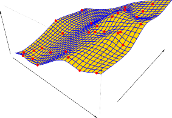

Parametric Methods
모수적 방법론(Parametric Methods)
Parametric methods involve a two-step model-based approach.
모수적 방법론은 다음과 같은 모델 기반의 2단계 접근 방식을 포함합니다.
-
First, we make an assumption about the functional form, or shape, of f .
-
첫째로 측정에 앞서, 우리는 가장 먼저 근원 추정치인 f 의 함수적 형태, 즉 모양에 대한 기초적인 구조 예측 가정을 직접 수립합니다.
For example, one very simple assumption is that f is linear in X :
예를 들어, 자주 쓰이는 한 가지 매우 단순한 직관적인 분석 가정은 f 가 X 측면에서 완벽히 수평인 선형적(linear)이라고 가정해 버리는 것입니다:
\[f(X) \approx \beta_0 + \beta_1 X_1 + \dots + \beta_p X_p \tag{2.4}\]This is a linear model , which will be discussed extensively in Chapter 3.
이러한 형태는 추후 3장에서 매우 포괄적이고 광범위하게 논의될 전형적인 선형 모델(linear model) 속성 형태입니다.
Once we have assumed that f is linear, the problem of estimating f is greatly simplified.
일단 우리가 가정을 통해 f 가 선형이라고 못 박아버렸다면, 모형 f 를 추정해야만 하는 근본적인 문제는 이전에 비해 도리어 엄청나게 단순하고 간소화됩니다.
Instead of having to estimate an entirely arbitrary p -dimensional function $f(X)$, one only needs to estimate the p + 1 coefficients $\beta_0, \beta_1, . . . , \beta_p$ .
완전히 모든 방향으로 무작위적이고 임의적인 다방면의 p 차원 함수 $f(X)$ 요인을 샅샅이 추정해야 하는 커다란 고난의 수고 대신, 이제 단지 한정된 모형인 p + 1 개의 고정 계수 파라미터(coefficients) $\beta_0, \beta_1, . . . , \beta_p$ 형태 추정에만 집중하면 됩니다.
-
After a model has been selected, we need a procedure that uses the training data to fit or train the model.
-
일단 모델의 대략적 모형이 결정되어 선택되고 나면, 두 번째로는 훈련 데이터 요소를 사용하여 해당 모델을 그에 알맞게 적합(fit) 하거나 훈련(train) 하는 특별한 조정 절차가 필요합니다.
In the case of the linear model (2.4), we need to estimate the parameters $\beta_0, \beta_1, \dots, \beta_p$.
선형 모델 (2.4) 양식을 예로 드는 경우, 우리는 매개변수인 파라미터 $\beta_0, \beta_1, \dots, \beta_p$ 의 정확한 값을 찾기 위해 추정해야 합니다.
That is, we want to find values of these parameters such that
즉, 우리는 다음 조건이 정확하게 충족될 수 있도록 이러한 모수 파라미터들의 세부 설정 값을 정교하게 찾고자 합니다:
\[Y \approx \hat{\beta}_0 + \hat{\beta}_1 X_1 + \dots + \hat{\beta}_p X_p \tag{2.5}\]The most common approach to fitting the model (2.4) is referred to as (ordinary) least squares , which we discuss in Chapter 3.
가정 모델 모형 (2.4)를 적합시키는 데 가장 흔하고 보편적으로 사용되는 대표 접근 방식은 차후 3장에서 상세히 논의될 일반 최소 제곱법(ordinary least squares) 기법이라고 불립니다.
However, least squares is one of many possible ways to fit the linear model.
그럼에도 불구하고, 단지 명심할 것은 이 최소 제곱법 역시 선형 모델에 적합할 수 있는 수만 가지 많고 많은 가능한 기법 중 하나의 선택일 뿐이라는 것입니다.
In Chapter 6, we discuss other approaches for estimating the parameters in (2.4).
앞으로 6장 파트에서는 모델 수립식 (2.4) 조건에서 모델 파라미터를 추정하는 것과 연관된 그 외의 아주 다양하고 다른 무수히 많은 최신 접근 방식을 집중적으로 논의합니다.
The model-based approach just described is referred to as parametric ; it reduces the problem of estimating $f$ down to one of estimating a set of parameters.
위에서 방금 설명된 모델 중심 접근의 방식은 모수적(parametric) 방법론 으로 지칭됩니다; 그 핵심 원리는 광범위하고 난해한 심도의 함수 형태 $f$ 자체를 낱낱이 추정하는 복잡한 분석 난제를 구조가 고정된 일련의 파라미터 한정 세트 묶음 무리들만 추정해 내는 훨씬 더 간소화된 단순 영역의 간단한 조율 문제로 크게 단축시키고 줄여(reduces) 준다는 것입니다.
Assuming a parametric form for $f$ simplifies the problem of estimating $f$ because it is generally much easier to estimate a set of parameters, such as $\beta_0, \beta_1, \dots, \beta_p$ in the linear model (2.4), than it is to fit an entirely arbitrary function $f$.
이처럼 $f$ 에 대해 모수적 형태를 가정하는 것은 $f$ 추정의 문제를 획기적으로 단순화합니다. 왜냐하면 완전히 임의의 알 수 없는 모양의 함수 $f$ 에 데이터 분포를 적합시키는 것보다는, 선형 모델 공식 (2.4)에서의 고안들인 요소 기호 $\beta_0, \beta_1, \dots, \beta_p$ 와 같은 일련의 정해진 매개변수 집단을 추정하는 것이 논리 체계에서 통상적으로 훨씬 접근하기 쉽기 때문입니다.
The potential disadvantage of a parametric approach is that the model we choose will usually not match the true unknown form of $f$.
하지만 이러한 모수적 접근법이 필연적으로 안고 있는 잠재적인 큰 단점은 우리가 사전에 모양을 단정하여 임의 선택한 모델 형태가 현실의 기저에 잠식되어 있는 알려지지 않은 실제의 $f$ 진실된 형태와 대개 일치하지 않을 수 있다는 치명적 한계입니다.
If the chosen model is too far from the true $f$, then our estimate will be poor.
만약 우리가 앞서 일찍이 고착화시켜 가정한 선택된 모형이 통계 내면 기저 세계의 실제 함수 진실 $f$ 양상과 너무 심하게 괴리가 동떨어져 존재하게 된다면 결과적으로 도착한 우리의 예측 추정치 체계는 필히 오판을 일으키고 아주 형편없이 나빠지게 됩니다.
We can try to address this problem by choosing flexible models that can fit many different possible functional forms for $f$.
분석 전문가들은 이러한 문제를 회피하기 위해 $f$ 에 대하여 다양하게 발생 가능한 여러 무수히 많은 상이한 함수 형태와 변곡들에 대응하고 이에 적합할 수 있는 다소 유연한(flexible) 속성의 복합 모델을 선택 도입함으로써 잠재된 이와 같은 오차 문제의 한계를 해결하려고 끊임없이 노력하고 시도할 수 있습니다.
But in general, fitting a more flexible model requires estimating a greater number of parameters.
하지만 그 이면의 현실에 비춰보면 예측 가능한 일로, 이토록 더욱 복잡하고 얽힌 유연성을 띤 엄청난 거대 시도 모델을 도입하여 적합시키는 분석 행위는 앞서의 일차원 모델보다 훨씬 기하급수로 다양해지고 많아진 더 큰 수의 파라미터 매개 변수를 일일이 추정하고 도출해야만 하는 크나큰 복잡도를 요구합니다.
These more complex models can lead to a phenomenon known as overfitting the data, which essentially means they follow the errors, or noise , too closely.
이렇게 훨씬 더 구조가 얽히고 복잡해진 우수해 보이는 모델들은 도리어 훈련 데이터에 대한 과적합(overfitting) 이라는 현상 문제로 쉽게 치우치고 이어질 수 있는데, 이 의미는 함수 모형이 본연의 규칙이 아닌 산발적으로 존재하는 오차나 노이즈(noise) 요소들까지 기계적으로 맹목적으로 너무 집착하듯 자세하게 밀착하게 복사하여 따라가게 된다는 것을 나타냅니다.
These issues are discussed throughout this book.
수많은 이러한 까다로운 이슈 문제들은 이 책의 장장 전반에 걸쳐 아주 상세히 다루어집니다.
Figure 2.4 shows an example of the parametric approach applied to the Income data from Figure 2.3. We have fit a linear model of the form
이어지는 그림 2.4는 앞서 살펴본 기존 수치 구조의 그림 2.3 Income 데이터에 직접 이러한 모수적 접근 방식을 전격 접목해 적용해 본 훌륭한 예시를 확연히 제대로 명확하게 보여줍니다. 이것은 우리가 다음과 같은 형태 양식 기조의 선형 모델을 그대로 적합시켰음을 보여 줍니다.

FIGURE 2.4. A linear model fit by least squares to the Income data from Figure 2.3. The observations are shown in red, and the yellow plane indicates the least squares fit to the data.
그림 2.4. 이 도표는 이전 그림 2.3 기재의 측정 구조적 Income 데이터에 대해, 대표 추정 방식인 선형 최소 제곱법(least squares)으로 적합시킨 다소 투박하고 거친 선형 표면 모형 패널의 적용 측정 모델 형태를 입체적으로 확연히 나타냅니다. 곳곳 구역 공간에 수집 측정 분포되어 분산된 실제 실험 표본 관측 위치점들은 똑같이 다 빨간색 원형 구형들로 선명하게 표시되어 나타나고, 중앙을 가로질러 거대하게 뻗어 올라가는 노란색 계열의 기울어진 반투명 평면 구조 분면은 이러한 수많은 불확실성 데이터 분산점에 대해 전체적으로 수학적 최소 제곱법 분석이 시행 계산되어 측정 추정 적합의 체제를 일구어낸 추적 적합선 모형 모델 패널을 분명하게 나타냅니다.
FIGURE 2.5. A smooth thin-plate spline fit to the Income data from Figure 2.3 is shown in yellow; the observations are displayed in red. Splines are discussed in Chapter 7.
그림 2.5. 이 그림 2.3의 붉은 점으로 나타난 개별 Income 데이터 관측 집단 형상에 대하여 한 차원 발전된, 이번에는 훈련 유연성을 크게 늘린 매끄러운 얇은 판 스플라인(smooth thin-plate spline) 평면 모델 표면 구조를 적합한 시도 형태 모습이 이번의 두 번째 노란색 지표 면으로 펼쳐져 나타나 수록되어 표시되어 있습니다; 분포된 표본 관찰 요소 군집 묶음 점들의 현황은 이전과 아주 똑같이 모두 일관된 빨간색 점 형태로 전시 기재되어 직관적으로 나타내어졌습니다. 시도된 유연한 이런 복잡성 높은 여러 스플라인 모형 기법들에 대한 광범위한 고찰적인 논의 형태 등은 제7장에서 깊이 다룹니다.
Since we have assumed a linear relationship between the response and the two predictors, the entire fitting problem reduces to estimating $\beta_0, \beta_1$, and $\beta_2$, which we do using least squares linear regression.
이 단계에서 우리는 응답 변수와 두 개의 예측 변수 사이에 가장 단순한 형태인 모수적 선형 역학 관계가 지니어 맺어졌음이라 최초의 단순성을 강력하게 가정했으므로, 결과론적으로 가장 복잡하게 예상되는 모델 표면 추정 전체의 심오한 적합 추정 계산의 거대 문제는 단지 부분 계수 $\beta_0, \beta_1$, 그리고 $\beta_2$ 형태를 추정하는 매우 간소화된 수학 연산 정도로 크게 축약되어 단순해지며, 우리는 이를 기초적인 최소 제곱 선형 회귀(least squares linear regression)를 통해 구합니다.
Comparing Figure 2.3 to Figure 2.4, we can see that the linear fit given in Figure 2.4 is not quite right: the true f has some curvature that is not captured in the linear fit.
그러나 한계성은 직관적으로 다가오기 마련이기에 그림 2.3의 투명한 파란 실제 패널 모양 그림과 우리 예측 그림 2.4에 노란색으로 도출된 구조 모델의 두 가지 지표를 꼼꼼하고 면밀히 대조하여 서로 세세히 분석 비교해 보면, 우리는 그림 2.4에서 추정 모델 값으로 제공된 결과의 선형 적합 표면 패널이 진정한 현실 세계의 지표 모델과 절대적으로 온전하게 정답처럼 맞아떨어지지 않는다는 점을 여실히 발견해 볼 수 있습니다: 다시 말해, 실제의 정면에 도사리고 숨겨진 f 구조의 표면은 고정 선형 틀로는 포착하지 못한 심하게 굴곡진 상당한 곡률(curvature)을 기저 내부에 분명하게 많이 존재시키며 가지고 있습니다.
However, the linear fit still appears to do a reasonable job of capturing the positive relationship between years of education and income , as well as the slightly less positive relationship between seniority and income .
그럼에도 불구하고 이 아쉬운 선형적 결함 한계 결과 선형 패널 적합 모형은, 크게 보아 years of education(교육 지속 연수) 과 경제 지표 income 사이에 지니는 뚜렷한 강력한 정비례적 긍정 관계 측면뿐만 아니라 조금은 더 완만하지만 seniority(고위직 연수) 와 income 간의 미미한 긍정 관계까지 그 뉘앙스를 대략적으로나마 포착해 내는 데에는 꽤나 훌륭하고 그런대로 그럴싸한 아주 합리적인 모델 추론 수준을 분명하게 훌륭히 견지하여 나타내어 주며 보여줍니다.
It may be that with such a small number of observations, this is the best we can do.
아마도 표본 추출이 빈약하여 총개수 30개의 많지 않은 제한적인 적은 숫자의 통계 데이터 관측치만을 가지고 유의미한 거대 분석을 도출하는 척박한 이 한도 내 환경에서라면, 어쩌면 투박하게라도 보이는 이러한 대강의 경향성 파악의 거친 노란 적합선 모델 도출 자체가 우리 역량 안에서 우리가 현 상황에 비추어 성취해 낼 수 있는 최첨단의 가장 최선의 결과치에 도달한 최선의 한계일지도 모릅니다.